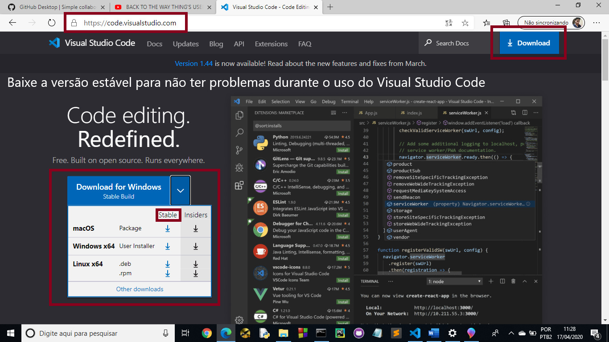
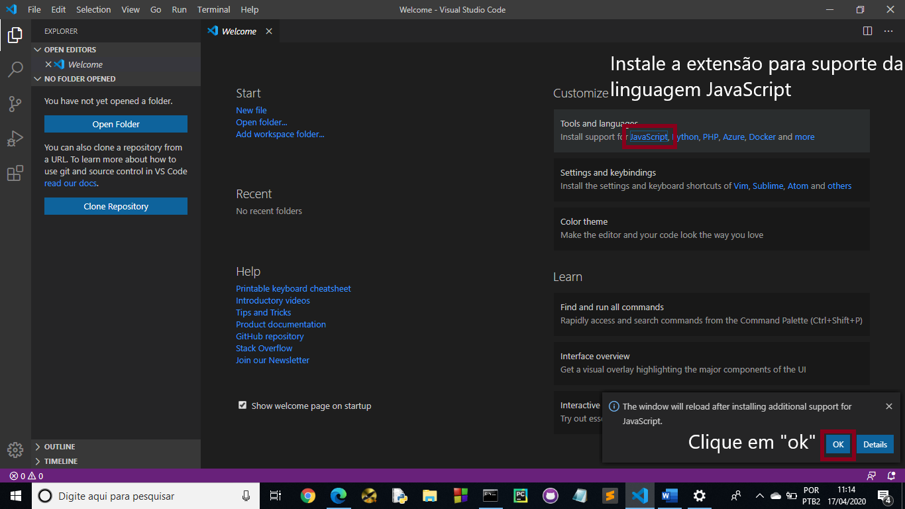
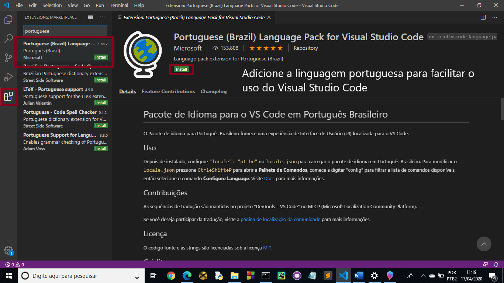
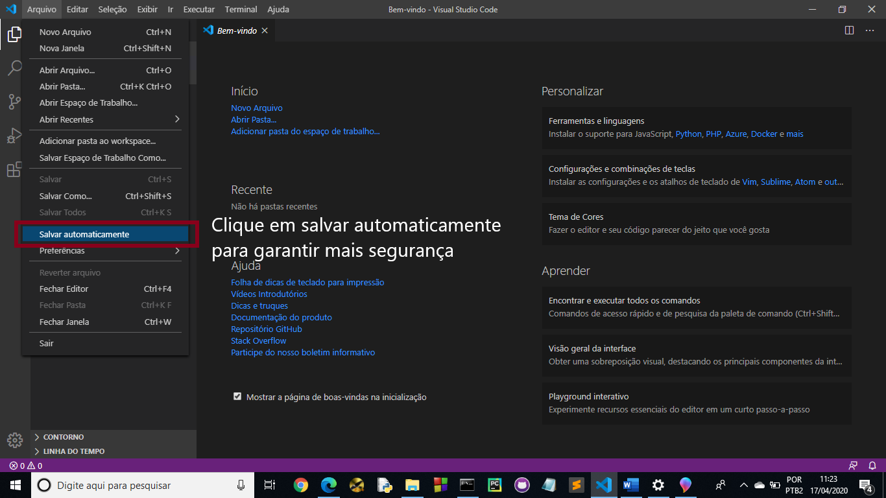
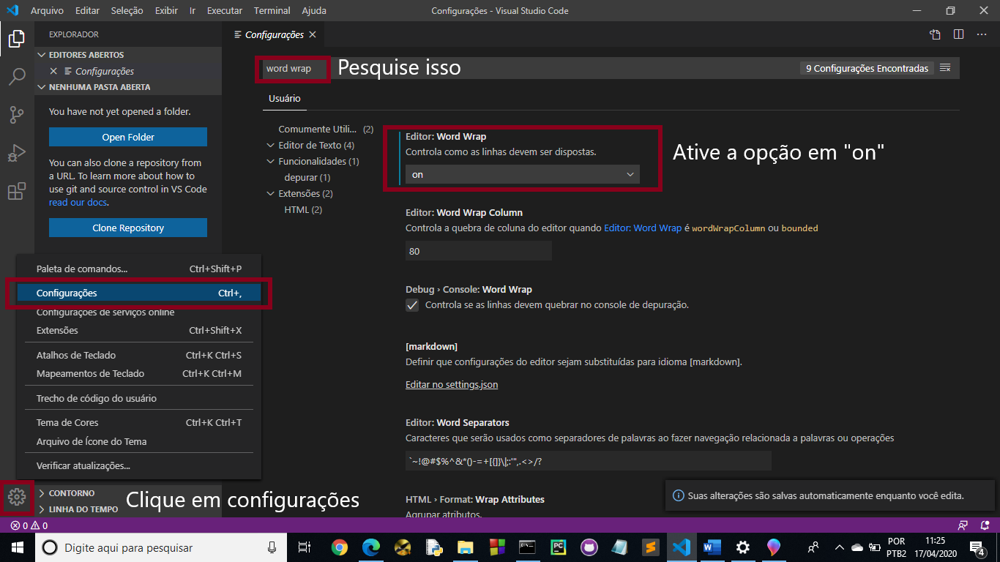
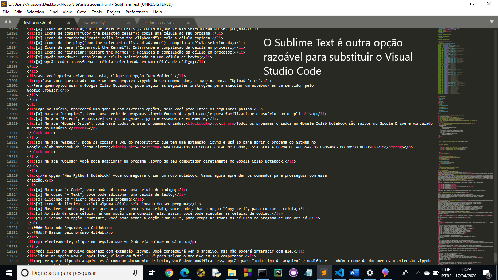
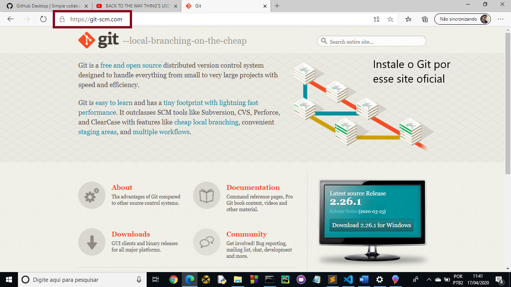
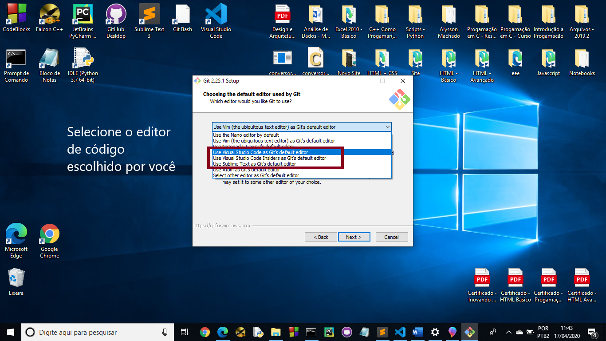
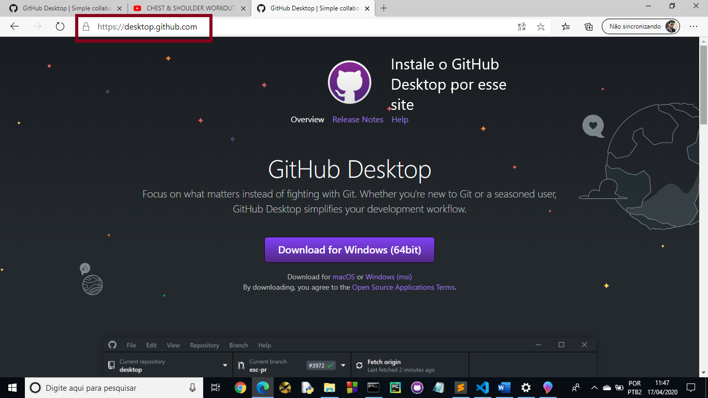
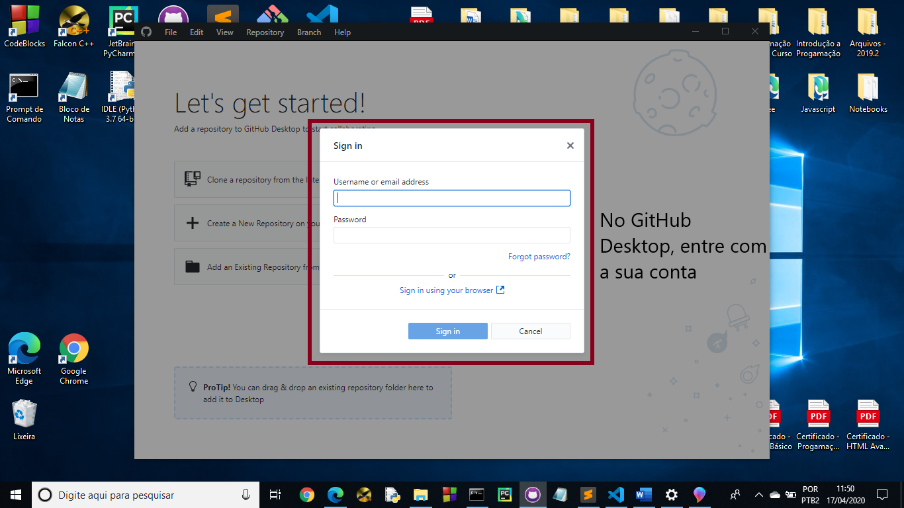

Nas aulas anteriores, aprendemos sobre o que é o Git e o GitHub. Com esses conhecimentos estabelecidos, vamos dar um importante passo para começarmos a trabalhar com essas ferramentas incríveis.
Nesta parte do curso, vamos apenas instalar todo o material necessário para se trabalhar com o GitHub, então veja os softwares necessários para começar bem na plataforma GitHub:
| Sites Oficiais para baixar os navegadores: |
|---|
| Google Chrome |
| Microsoft Edge |
| Safari (Disponível só para MACos) |
Sobre o Visual Studio Code, há algumas recomendações durante a instalação:

Entre no site oficial do Visual Studio Code, clicando aqui, para conseguir baixar esse editor de código.

Dentro do Visual Studio Code, você pode instalar extensões que poderam ajudar-lhe em seu projeto. Nele, há inúmeras linguagens de programação disponíveis. Fique a vontade para começar a usar as que serão convenientes para você.

Nas extensões, adicione a linguagem portuguesa para ser padrão do aplicativo, isso pode facilitar o seu uso.

Habilite a possibilidade de salvar automaticamente, assim o seu trabalho corre menos risco de ser perdido.

A opção "Word Wrap" ligada permite que, caso a linha de código esteja muito extensa, ela não ultrapasse a largura da tela do computador, mas sim quebre de linha. Com isso, poderemos depurar com mais facilidade os nosso códigos.
Outra opção interessante é o Sublime Text, você pode instalar esse editor de código clicando aqui. Com ele, é possível utilizar os mesmos recursos que o Visual Studio Code oferece, porém com mais dificuldades, pois o Visual Studio Code, por também ser da Microsoft (assim como o GitHub), possui mais compatibilidades.

O Sublime Text é uma ótima opção caso você queira substituir o Visual Studio Code (inclusive esse site que você está usando nesse exato momento foi feito utilizando essa IDE).
| Sites Oficiais para baixar o Git e o GitHub Desktop: |
|---|
| Git SCM |
| GitHub Desktop |

Nesse site, você pode instalar o Git. É importante que você sempre opte por instalar aplicativos em sites oficiais, com isso você garantirá sua segurança e dos computadores conectados na mesma rede que a sua.

Em algum momento da instalação do Git, você deve selecionar o editor de código que você vai utilizar, foi dado o exemplo de uso para o Visual Studio Code e o Sublime Text. Após concluir esse passo, avance com as configurações sugeridas pelo instalador do Git.

Instale o GitHub Desktop por esse site oficial. Com ele, você poderá agilizar ainda mais o seu trabalho.

No GitHub Desktop, entre com a sua conta criada. Caso você ainda tenha dúvidas, veja a aula anterior clicando aqui.
Na próxima aula, vamos começar a utilizar os nossos softwares acima para trabalhar em nossos repositórios. Espero que até o momento você tenha entendido tudo e, em caso de dúvidas, clique no link abaixo para me enviar um e-mail.
Está gostando do conteúdo? Compartilhe com seus amigos para que eles possam aprender também! Ajude a tornar a educação gratuita mais plural e democrática.
Visite mais artes em GitHub OctoDex.